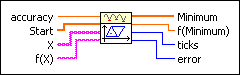
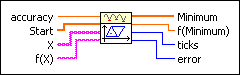
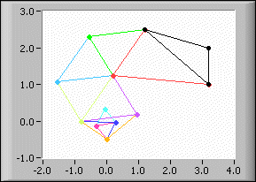

Downhill Simplex nD VI
Owning Palette: Optimization VIs
Requires: Full Development System
Determines a local minimum of a function of n independent variables with the Downhill Simplex method.

 Add to the block diagram Add to the block diagram |
 Find on the palette Find on the palette |
Owning Palette: Optimization VIs
Requires: Full Development System
Determines a local minimum of a function of n independent variables with the Downhill Simplex method.

| Add to the block diagram |
Find on the palette |
 |
accuracy controls the accuracy of the minimum. The method stops if two consecutive approximations differ no more than the value of accuracy. The default is 1.00E-8. |
 |
Start is an array of points at which the optimization process is starting. These points form a simplex in n dimension. |
 |
X is an array of strings representing the x variables. If the array of strings contains the variable t, the VI returns an error. |
 |
f(X) is the string representing the function of the x variables. The formula can contain any number of valid variables. |
 |
Minimum is the determined local minimum in n dimension. |
 |
f(Minimum) is the function value of f(X) at the determined minimum. |
 |
ticks is the time in milliseconds for the whole calculation. |
 |
error returns any error or warning from the VI. You can wire error to the Error Cluster From Error Code VI to convert the error code or warning into an error cluster. |
The Downhill Simplex algorithm, also called the Nelder and Mead method, works without partial derivatives. The Downhill Simplex algorithm consists of catching the minimum of the function f(X) with the help of simple geometrical bodies, specifically a simplex.
A simplex in 2D is a triangle; a simplex in 3D is a tetrahedron, and so on. You must have (n + 1) starting points, each of dimension n, forming the initial simplex. You must enter only one point of these (n + 1) starting points. The (n + 1) dimensional simplex is constructed automatically.
For example, the following equation defines a function.
f(x, y) = x2 + y2
For the function defined by the preceding equation, you must enter two numbers, describing exactly one point in 2D. The algorithm generates a new simplex by some elementary operations such as reflections, expansions, and contractions. In the end, the minimum is concentrated in a very small simplex.
To find the simplex sequence tending to the minimum (0, 0) of the preceding function, enter the following values on the front panel of the Downhill Simplex nD VI:
The following illustration shows the simplex sequence tending to the minimum (0, 0) of the preceding function.
